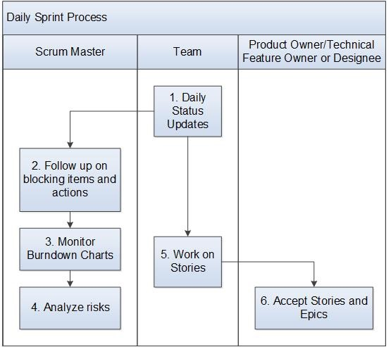

Daily Sprint Process¶
This process describes the daily routine of the release team during a sprint.
Entry Criteria |
There is an active sprint. |
Inputs |
Stories status |
Exit Criteria |
The team has a common understanding of the status of the sprint. Any blocking issues have been raised and actions taken to resolve them. The status of the burndown chart is up to date. |
Outputs |
|
Activities¶

Step # |
Activity Name |
Description |
|---|---|---|
1 |
Daily status updates |
Every day, the team ensures that the status of their Stories are up to date in the Requirements Management system (e.g., Jira Agile), so that the burndown charts will correctly reflect the status. |
2 |
Follow up on blocking items and actions |
The Scrum Master follows up to resolve blocking items and actions. |
3 |
Monitor burndown charts |
The Scrum Master monitors progress with the burndown chart. |
4 |
Analyze risks |
The Scrum Master analyzes risks to completion of the Stories in this sprint. If it is evident that the team will not complete all stories, the Scrum Master takes actions such as working with the PM to identify which stories should slip, find temporary resources to help the team stay on track, or re-arrange the story priorities. |
5 |
Work on Stories |
Team members work on Stories. |
6 |
Accept Stories and Epics |
The Product Manager/Technical Feature Owner or designee accepts (approves) Stories that are complete, and any Epics in “Done” status, according to the definition of done and acceptance criteria for a Story and Epic. |
Change Log¶
Date |
Change Request ID |
Version |
Change By |
Description |
05/21/2020 |
N/A |
0.1 |
Shree Vidya Jayaraman |
Initial Draft |
06/22/2020 |
N/A |
0.2 |
Shree Vidya Jayaraman |
Updates based on Doina andRodger’s feedback |